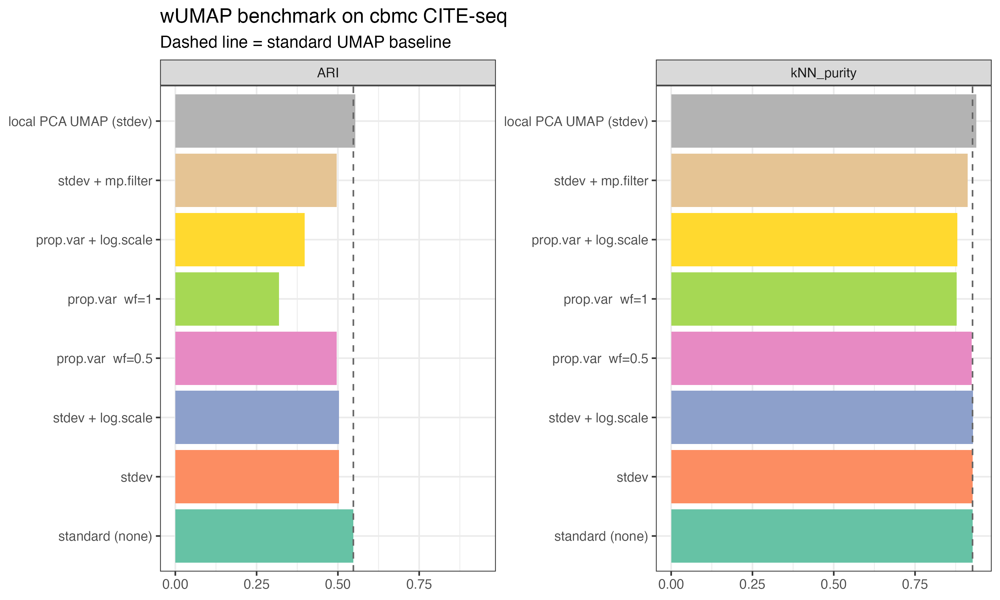
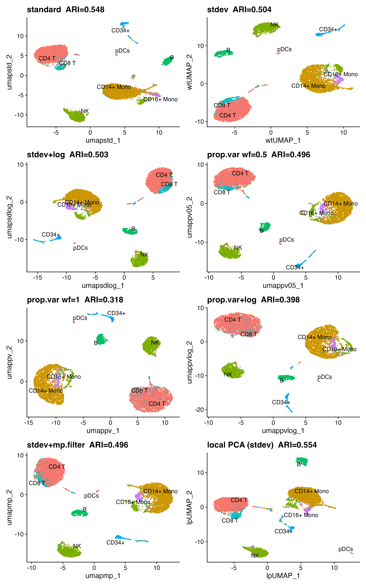

Benchmarking wUMAP Against Standard UMAP
benchmark.RmdStrategy
To evaluate whether variance-weighting improves clustering quality, we need an independent ground truth — one not derived from the RNA clusters themselves.
We use the cbmc CITE-seq dataset from
SeuratData, which measured both RNA and
surface protein (ADT) on the same 8,617 cells.
ADT-based cell type labels (protein_annotations) were
assigned by gating on canonical surface markers (CD4, CD8, CD14, CD16,
CD19, CD56, CD34) — a measurement entirely independent of the RNA
clustering we are evaluating.
Two metrics are computed for each method:
| Metric | What it measures |
|---|---|
| ARI (Adjusted Rand Index) | How well RNA clusters match protein-derived cell types. Range 0–1; higher = better. |
| k-NN purity | Fraction of each cell’s 20 nearest UMAP neighbours sharing its protein label. Range 0–1; higher = better. |
Setup
library(Seurat)
library(SeuratData)
library(ggplot2)
library(patchwork)
library(wUMAP)
library(mclust) # adjustedRandIndex
library(RANN) # fast k-NN
data(cbmc)
cbmc <- UpdateSeuratObject(cbmc)
# Keep only cells with protein labels; remove doublets
cbmc <- cbmc[, !cbmc$protein_annotations %in% "T/Mono doublets" &
!is.na(cbmc$protein_annotations)]
cbmc <- NormalizeData(cbmc, verbose = FALSE)
cbmc <- FindVariableFeatures(cbmc, nfeatures = 2000, verbose = FALSE)
cbmc <- ScaleData(cbmc, verbose = FALSE)
cbmc <- RunPCA(cbmc, npcs = 30, verbose = FALSE)Standard UMAP (baseline)
set.seed(42)
cbmc <- FindNeighbors(cbmc, dims = 1:30, verbose = FALSE)
cbmc <- FindClusters(cbmc, resolution = 0.8, verbose = FALSE)
cbmc <- RunUMAP(cbmc, dims = 1:30, reduction.name = "umap.std", verbose = FALSE)
ari_std <- adjustedRandIndex(cbmc$seurat_clusters, cbmc$protein_annotations)
pur_std <- knn_purity(Embeddings(cbmc, "umap.std"), cbmc$protein_annotations)Weighted UMAP variants
set.seed(42)
# stdev weighting
cbmc <- RunWeightedNeighbors(cbmc, dims = 1:30, weight.by = "stdev",
prefix = "wt.sd", verbose = FALSE)
cbmc <- FindClusters(cbmc, graph.name = "wt.sd_snn", resolution = 0.8,
verbose = FALSE)
cbmc <- RunWeightedUMAP(cbmc, dims = 1:30, weight.by = "stdev",
reduction.name = "umap.sd", verbose = FALSE)
ari_sd <- adjustedRandIndex(cbmc$seurat_clusters, cbmc$protein_annotations)
pur_sd <- knn_purity(Embeddings(cbmc, "umap.sd"), cbmc$protein_annotations)
# stdev + log.scale
cbmc <- RunWeightedNeighbors(cbmc, dims = 1:30, weight.by = "stdev",
log.scale = TRUE, prefix = "wt.sd.log",
verbose = FALSE)
cbmc <- FindClusters(cbmc, graph.name = "wt.sd.log_snn", resolution = 0.8,
verbose = FALSE)
cbmc <- RunWeightedUMAP(cbmc, dims = 1:30, weight.by = "stdev",
log.scale = TRUE, reduction.name = "umap.sd.log",
verbose = FALSE)
ari_sd_log <- adjustedRandIndex(cbmc$seurat_clusters, cbmc$protein_annotations)
pur_sd_log <- knn_purity(Embeddings(cbmc, "umap.sd.log"), cbmc$protein_annotations)
# prop.var, weight.factor = 0.5
cbmc <- RunWeightedNeighbors(cbmc, dims = 1:30, weight.by = "prop.var",
weight.factor = 0.5, prefix = "wt.pv05",
verbose = FALSE)
cbmc <- FindClusters(cbmc, graph.name = "wt.pv05_snn", resolution = 0.8,
verbose = FALSE)
cbmc <- RunWeightedUMAP(cbmc, dims = 1:30, weight.by = "prop.var",
weight.factor = 0.5, reduction.name = "umap.pv05",
verbose = FALSE)
ari_pv05 <- adjustedRandIndex(cbmc$seurat_clusters, cbmc$protein_annotations)
pur_pv05 <- knn_purity(Embeddings(cbmc, "umap.pv05"), cbmc$protein_annotations)
# prop.var, weight.factor = 1
cbmc <- RunWeightedNeighbors(cbmc, dims = 1:30, weight.by = "prop.var",
prefix = "wt.pv", verbose = FALSE)
cbmc <- FindClusters(cbmc, graph.name = "wt.pv_snn", resolution = 0.8,
verbose = FALSE)
cbmc <- RunWeightedUMAP(cbmc, dims = 1:30, weight.by = "prop.var",
reduction.name = "umap.pv", verbose = FALSE)
ari_pv <- adjustedRandIndex(cbmc$seurat_clusters, cbmc$protein_annotations)
pur_pv <- knn_purity(Embeddings(cbmc, "umap.pv"), cbmc$protein_annotations)
# prop.var + log.scale
cbmc <- RunWeightedNeighbors(cbmc, dims = 1:30, weight.by = "prop.var",
log.scale = TRUE, prefix = "wt.pv.log",
verbose = FALSE)
cbmc <- FindClusters(cbmc, graph.name = "wt.pv.log_snn", resolution = 0.8,
verbose = FALSE)
cbmc <- RunWeightedUMAP(cbmc, dims = 1:30, weight.by = "prop.var",
log.scale = TRUE, reduction.name = "umap.pv.log",
verbose = FALSE)
ari_pv_log <- adjustedRandIndex(cbmc$seurat_clusters, cbmc$protein_annotations)
pur_pv_log <- knn_purity(Embeddings(cbmc, "umap.pv.log"), cbmc$protein_annotations)
# stdev + Marchenko-Pastur filtering: zero out noise PCs, weight signal PCs by stdev
cbmc <- RunWeightedNeighbors(cbmc, dims = 1:30, weight.by = "stdev",
mp.filter = TRUE, prefix = "wt.mp",
verbose = FALSE)
cbmc <- FindClusters(cbmc, graph.name = "wt.mp_snn", resolution = 0.8,
verbose = FALSE)
cbmc <- RunWeightedUMAP(cbmc, dims = 1:30, weight.by = "stdev",
mp.filter = TRUE, reduction.name = "umap.mp",
verbose = FALSE)
ari_mp <- adjustedRandIndex(cbmc$seurat_clusters, cbmc$protein_annotations)
pur_mp <- knn_purity(Embeddings(cbmc, "umap.mp"), cbmc$protein_annotations)Local PCA UMAP
RunLocalPCANeighbors() builds KNN/SNN graphs from
per-neighbourhood PCA distances and stores them for consistent
clustering and visualisation. Using the same k.param and
local.weight.by for both the graph and the UMAP step
ensures clustering and layout share identical distances.
set.seed(42)
# Weighted local PCA: build KNN/SNN graphs with stdev-weighted local distances,
# then cluster and visualise from the same graph.
cbmc <- RunLocalPCANeighbors(cbmc, dims = 1:30, k.param = 30,
prefix = "lp", verbose = FALSE)
cbmc <- FindClusters(cbmc, graph.name = "lp_snn", resolution = 0.8,
verbose = FALSE)
cbmc <- RunLocalPCAUMAP(cbmc, dims = 1:30, k.param = 30,
reduction.name = "umap.lp", verbose = FALSE)
ari_lp <- adjustedRandIndex(cbmc$seurat_clusters, cbmc$protein_annotations)
pur_lp <- knn_purity(Embeddings(cbmc, "umap.lp"), cbmc$protein_annotations)Results
results <- data.frame(
Method = c(
"standard (none)",
"stdev",
"stdev + log.scale",
"prop.var wf=0.5",
"prop.var wf=1",
"prop.var + log.scale",
"stdev + mp.filter",
"local PCA UMAP (stdev)"
),
ARI = c(ari_std, ari_sd, ari_sd_log, ari_pv05, ari_pv, ari_pv_log,
ari_mp, ari_lp),
kNN_purity = c(pur_std, pur_sd, pur_sd_log, pur_pv05, pur_pv, pur_pv_log,
pur_mp, pur_lp)
)
knitr::kable(results, digits = 3,
caption = "Clustering quality vs protein labels on cbmc CITE-seq (n ≈ 7,699 cells).")| Method | ARI | kNN_purity |
|---|---|---|
| standard (none) | 0.548 | 0.927 |
| stdev | 0.504 | 0.927 |
| stdev + log.scale | 0.503 | 0.929 |
| prop.var wf=0.5 | 0.496 | 0.924 |
| prop.var wf=1 | 0.318 | 0.878 |
| prop.var + log.scale | 0.398 | 0.880 |
| stdev + mp.filter | 0.496 | 0.912 |
| local PCA UMAP (stdev) | 0.554 | 0.939 |
library(tidyr)
res_long <- tidyr::pivot_longer(results, cols = c("ARI", "kNN_purity"),
names_to = "Metric", values_to = "Score")
res_long$Method <- factor(res_long$Method, levels = results$Method)
baseline <- data.frame(
Metric = c("ARI", "kNN_purity"),
Score = c(ari_std, pur_std)
)
ggplot(res_long[!is.na(res_long$Score), ],
aes(x = Method, y = Score, fill = Method)) +
geom_col(show.legend = FALSE) +
geom_hline(data = baseline, aes(yintercept = Score),
linetype = "dashed", colour = "grey40") +
facet_wrap(~Metric, scales = "free_y") +
scale_fill_brewer(palette = "Set2") +
coord_flip() +
labs(x = NULL, y = NULL,
title = "wUMAP benchmark on cbmc CITE-seq",
subtitle = "Dashed line = standard UMAP baseline") +
theme_bw(base_size = 12)
ARI and k-NN purity for each method. Dashed line = standard UMAP baseline. ARI is not shown for local PCA UMAP (embedding-only method).
UMAP layouts coloured by protein label
Idents(cbmc) <- "protein_annotations"
plots <- list(
DimPlot(cbmc, reduction = "umap.std", label = TRUE, repel = TRUE) +
ggtitle(sprintf("standard ARI=%.3f", ari_std)) + NoLegend(),
DimPlot(cbmc, reduction = "umap.sd", label = TRUE, repel = TRUE) +
ggtitle(sprintf("stdev ARI=%.3f", ari_sd)) + NoLegend(),
DimPlot(cbmc, reduction = "umap.sd.log", label = TRUE, repel = TRUE) +
ggtitle(sprintf("stdev+log ARI=%.3f", ari_sd_log))+ NoLegend(),
DimPlot(cbmc, reduction = "umap.pv05", label = TRUE, repel = TRUE) +
ggtitle(sprintf("prop.var wf=0.5 ARI=%.3f", ari_pv05)) + NoLegend(),
DimPlot(cbmc, reduction = "umap.pv", label = TRUE, repel = TRUE) +
ggtitle(sprintf("prop.var wf=1 ARI=%.3f", ari_pv)) + NoLegend(),
DimPlot(cbmc, reduction = "umap.pv.log", label = TRUE, repel = TRUE) +
ggtitle(sprintf("prop.var+log ARI=%.3f", ari_pv_log)) + NoLegend(),
DimPlot(cbmc, reduction = "umap.mp", label = TRUE, repel = TRUE) +
ggtitle(sprintf("stdev+mp.filter ARI=%.3f", ari_mp)) + NoLegend(),
DimPlot(cbmc, reduction = "umap.lp", label = TRUE, repel = TRUE) +
ggtitle(sprintf("local PCA (stdev) ARI=%.3f", ari_lp)) + NoLegend()
)
wrap_plots(plots, ncol = 2)
All methods coloured by ADT-derived protein label.
Interpretation
On this PBMC-like dataset, aggressive prop.var weighting
(wf=1) reduces clustering quality (ARI
0.548 → 0.318). PC 1 in scRNA-seq captures the monocyte–lymphocyte axis
so strongly that further emphasising it collapses finer lymphocyte
subtypes together.
Key takeaways:
-
stdevis the safest default — only a marginal ARI change, same k-NN purity as standard. -
prop.varwithweight.factor = 0.5(partial blend) avoids the worst of over-emphasising PC 1. -
log.scale = TRUEpartially mitigates PC 1 dominance and recovers some ARI compared to fullprop.var. -
mp.filter = TRUE(here combined withstdev) automatically zeros out noise PCs whose variance is below the Marchenko–Pastur ceiling, then applies the chosen weighting to the remaining signal PCs. On datasets where most PCs are genuine signal it behaves like the base scheme; on noisier datasets it can sharpen clusters by discarding uninformative PCs entirely. -
Local PCA (stdev) uses per-neighbourhood SVD
distances weighted by local standard deviation, with
RunLocalPCANeighbors()providing consistent clustering and UMAP graphs. It is now a fully integrated workflow comparable to the global weighting methods. - k-NN purity differences are generally small across all methods, indicating UMAP topology is broadly preserved — the main effect is on Louvain cluster resolution.
Recommendation: start with the default
weight.by = "stdev", and use mp.filter = TRUE
when you want a principled, data-driven noise threshold. Use
RunLocalPCANeighbors() + RunLocalPCAUMAP()
when you suspect the dataset has strong local anisotropic structure
(trajectories, gradients) that a global metric would miss.